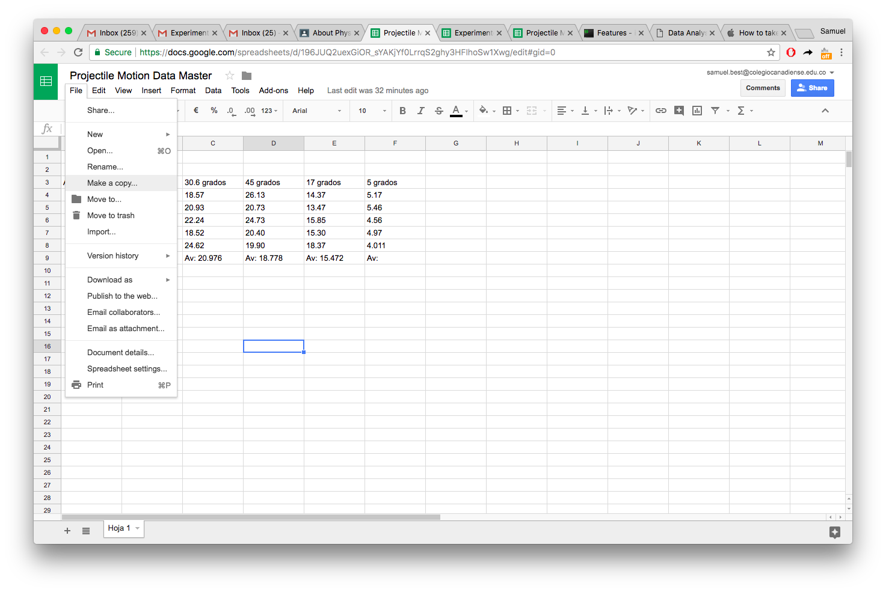
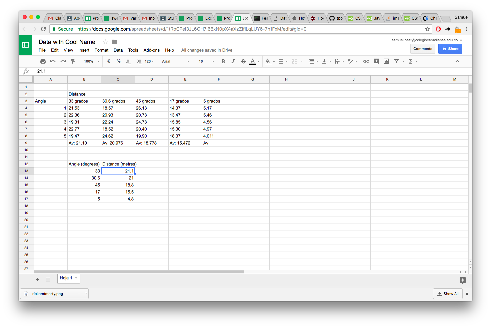

Data Analysis Tutorial
Getting Started
In this tutorial you will learn some basic statistics and how to use them to determine a line of best fit. We are going to use a method that will allow us to find a fit for any function, not just linear functions.
Accessing Data
To do this analysis we are going to need to use the data collected during the experiment. You can link to this data from Google Classroom by clicking the "Projectile Motion Data Master" in the About section of Google Classroom as seen below.
Click here to toggle image
This should bring you to a Google Sheets page where you can access the data. You need to make a copy of this data, as you cannot edit the version that is accessible to everyone. To do this, you must go to file -> Make copy, and give your new spread sheet a cool name. Shown below:
Click here to toggle image
Formatting Data
Now the fun begins. First off, there are some issues with this data you are going to have to fix. Google Sheets recognizes whether your account is set to Spanish or English, and treats numbers accordingly. You might think numbers in both languages are the same, but how many times have I had to remind you that decimal places are '.' in English, not ','? In order to successfully use the power of Google Sheets, we need it to recognize our numbers as numbers, and so from now on, all decimal points we need to put as commas.
We are going to have to organize our data into a table. For now it's going to be straight forward, one column will have the angle in degrees, the second will have the average distance in metres. Make this table below the data already given, and be aware you might need to calculate a missing average.
Please try this out BEFORE clicking on the text below
Click here to toggle image
Using Our Model
Now in order to continue, we are going to have to compare our data to a mathematical model. We spent time in class figuring out this mathematical model my solving for the horizontal distance given the initial speed and angle of projectile. Try and figure that out again before checking the answer below
Click here to toggle math
Starting with
$$ \tag 1 d_y = v_o\sin\theta - {1 \over 2}gt^2 $$ and $$ \tag 2 d_x = v_o\cos\theta t $$
we must solve the first equation (1) for time, knowing the total vertical distance \(d_y = 0 \). This results in
$$ \tag 3 t = {2v_o\sin\theta \over g} $$
by substituting this result for (\t\) in equation (2) we obtain our final result:
$$ \tag 4 d_x = { 2 v_o^2 \sin \theta \cos \theta \over g } $$